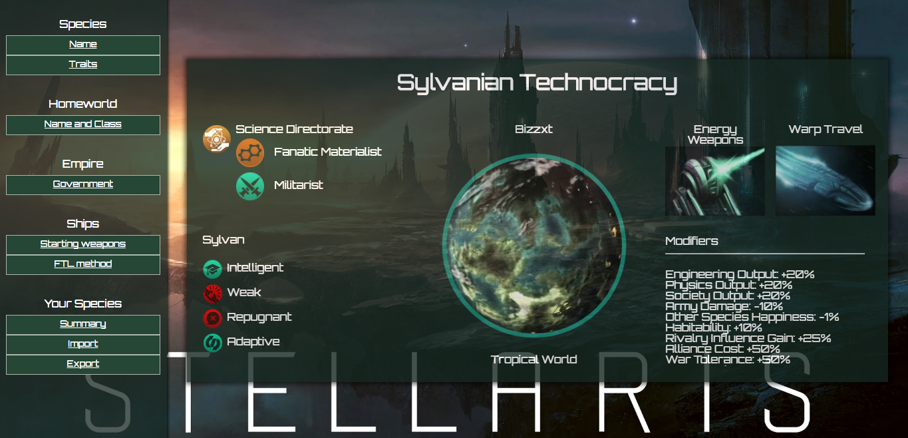

Edwin Lai
Growing up, I was always a huge techie, but I never had to touch anything more involved than scripts to solve my computer problems before college. The first time I ran into coding was during a distribution requirement for my major, applied mathematics, while attending UCLA. During that class, I found that coding came very naturally to me, so I decided to pivot to web development after graduation.
Now I'm a full stack software engineer with ~4 years of experience in web application development. Tools I've worked with in the past include Kubernetes, Python, Django, JavaScript, and Angular. I enjoy building and shipping products users love, writing software that makes the lives of stakeholders and individual contributors easier, and bringing clarity and a human touch to engineering organizations. My colleagues would describe me as a consistently high performer who insists on implementing and evangelizing best practices.
The below is a selection of my past non-proprietary work. For better or worse, most of the work these days is proprietary.
Portfolio
Vetter
Digital Loan Automation Platform
- Implement redesign of marketing site and loan product based on Invision and Zeplin prototypes.
- Work on loan processing web application used by small banks to improve throughput.
- Consult with head of engineering and product manager to determine aesthetic direction.
WANDR
Connecting Savvy Travelers with Enterprising Hoteliers

Features
- Provided price conscious travelers with convenient packages assembled through partnerships with hotels looking to offload expiring inventory.
- Project involved an automated scraper to collect data used for predicting future flight prices.
Stellaris Species Generator | Github
Utility for Creating Stellaris Species
Features
- Over 10,000 users in 5 days!
- All known traits, ethos, and government forms available at species creation are selectable.
- Tells users what trait, ethos, and government combinations are allowed on the fly.
- Summary page collates species information in an aesthetically pleasing format.
Helping Hand | Github
Personal Fundraising Site Inspired by GoFundMe

Features
- High-performance single page web app powered by React and Flux.
- JavaScript search utility automatically filters results based on changes in user input.
- Uses Ruby on Rails custom routes to respond to AJAX requests not covered by RESTful routes.
RainbowRoad | Github
JavaScript Browser Game Influenced by Candyland

Features
- Animations used to move pieces and communicate gameplay instructions to players.
- Implements computer players that are equally competent compared to human players.
ModelMapper | Github
Lightweight ORM Framework Based on ActiveRecord
Features
- Replicates the most commonly used features of ActiveRecord without excess baggage.
- Modules and inheritance keep code maintainable and DRY.